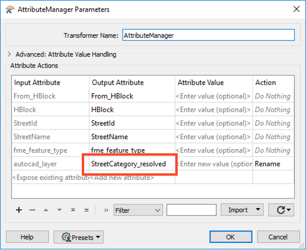
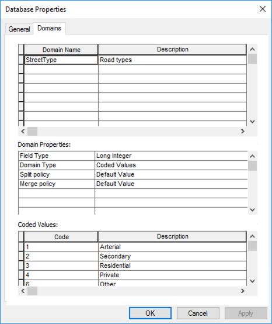

When this option is checked an additional attribute will be added called _<attribute>_resolved_ which contains the textual description of the coded attribute value.
After completing this unit, you’ll be able to:
A domain is a set of rules that define permitted values for an attribute. They are used to constrain data values in order to ensure data integrity. A domain is defined in a geodatabase as a unique entity and can be applied to any attribute in any feature class within the geodatabase that contains the domain definition.
There are two types of geodatabase domains (coded domains and range domains) and both are supported by FME. A coded domain is essentially a list of multiple valid values while a range domain is a single permitted range of numeric values.
When reading a geodatabase, FME has an option to resolve domains.
When this option is checked an additional attribute will be added called _<attribute>_resolved_ which contains the textual description of the coded attribute value.
FME has the capability to write to existing or create new geodatabase tables. As such, when writing geodatabase domains, the workflow requirements will tend to fall under one of two scenarios:
These scenarios will be controlled primarily by the following writer parameters:
Despite the scenarios mentioned below, it should be noted that using an XML Workspace Document (containing the required domain definitions) or a file geodatabase as a template on a geodatabase writer, is the most efficient and highly recommended means of writing geodatabase domains. For more information on importing an XML document or a geodatabase Template with a schema, please see the Geodatabase Writer documentation.
Any data written to an existing domain field is, by default, inserted as normal. As the table already exists, its attribute(s) will already be associated with the required domain and there is no need to set any parameter to define this connection.
However, if you wish to validate incoming data – for instance, compare it to a domain definition to ensure it has valid attribute values – then you must set the writer parameter “Validate Features to Write” to Yes. If the validation parameter is set to No, the data would pass into the Geodatabase without error, despite the fact that some data values may not meet domain rules.
When creating a new table that is to use an existing domain, the attribute that needs to be associated with a domain should be given the data type coded_domain or range_domain (depending on its type) in the schema definition. One would then click the Edit button in the attribute width field and enter the name of the existing domain in the "Domain Name" section.
There are a few limitations in regard to domain writing.
Firstly, it is not possible to write to an existing table and to either create an association with an existing domain or create an entirely new domain. That is because this association is wrapped up in the table definition, and an existing table definition cannot be changed by FME. You would need to drop the existing table and re-create it entirely in order to be able to do this.
Secondly, for the same reason stated above, creating a domain is a one-off translation. You would set the data type to coded_domain/range_domain for the initial process, but subsequent loads of the data should be done with the data type changed back the actual type of data (char, integer, etc.)
Finally, it is not possible to create a domain dynamically (i.e. the domain definition should be manually defined prior to execution and not defined during the workspace process).
The following example demonstrates Scenario 2: Writing to a new table and using an existing domain through the use of a template.
The Esri Geodatabase (File Geodb) reader/writer used in the following example requires that a licensed version of ArcGIS be available to the user. For more information on required ArcGIS license levels, please see Required ArcGIS License Types for FME Geodatabase Formats.
Roads (Autodesk AutoCAD DWG/DXF)

In the above image, we see a visualization of the source Roads AutoCAD DWG. The values that will be subject to the destination geodatabase domain definition can be seen in the autocad_layer format attribute.
1. Read Source Data
In a blank workspace, add an Autodesk AutoCAD DWG/DXF writer to the canvas, browse to the Roads.zip dataset that is provided in the Files section of this tutorial, you can leave the file zipped. Change the Workflow Options to Single Merged Feature Type. Then open the parameters.

In the parameters, set the Group Entities By to Attribute Schema, then click OK twice to add the reader.
Once the reader has been added to the workspace canvas, double-click on the reader feature type to open the parameters. Switch to the Format Attributes tab and enable the autocad_layer, then click OK.
2. Map Attributes
There are two different ways to map attributes to domains, either by domain code or by resolved domain values. If following along with the demo, only use one method.
Next, we will use an AttributevalueMapper to map the incoming values from the source DWG to the domain codes which we will apply to the domain definition.
Add an AttributeValueMapper to the canvas and connect it to the <ALL> reader feature type. In the parameters, set the Source Attribute to autocad_layer and enter StreetCategory as the Destination Attribute. Enter 99 as the Default Value as this will be the domain code we will use for Unknown street types.
In the Value Mapping part of the parameters dialog, enter the values as seen in the table.
| Source Value | Destination Value |
|---|---|
| Arterial | 1 |
| Secondary | 2 |
| Residential | 3 |
| Private | 4 |
| NonCity | 5 |
| Other | 6 |
| Collector | 7 |
| Unknown | 99 |

As an alternative to the step described above, one could instead use an AttributeManager, to take the value from the source DWG file and map it to the domain definition based on the domain definitions resolved value. To do so, add an AttributeManager to the workspace and open the parameters dialog. Rename autocad_layer to StreetCategory_resolved - the resolved version of the domain.

The above tends to be most applicable when your workflow falls under Scenario #1 (writing to an existing table using an existing domain definition) or Scenario #2 (writing to a new table in the geodatabase using an existing domain). In both scenarios, it would be assumed that one does not know the actual domain codes contained in the domain definition and instead know the resolved value.
3. Write Features and Create Domain
Add an Esri Geodatabase (File Geodb) writer to the canvas, browse to a location to save the geodatabase. Leave the Feature Class or Table Definition set to Copy from Reader then open the parameters.
In the parameters, enable Overwrite Existing Geodatabase, then browse to the RoadsTemplate.gdb for the Template File Geodatabase. Next, expand the Advanced section and set Validate Features to Write to Yes. This setting will ensure that the incoming source data adheres to our domain definition. Then click OK twice to add the writer.
Connect the writer to either the AttributeValueMapper or the AttributeManager, then open the writer feature type parameters.
In the feature type parameters, change the Feature Class or Table Name to something more meaningful such as Streets.
Next, switch to the Attributes tab and rename autocad_layer to StreetCategory and click OK.
4. Save and Run the Workspace
Save the workspace and then run it. View your output in ArcMap.
